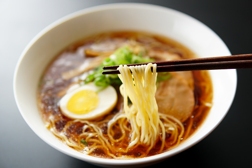

Homemade Ramen

Favourite Dish among the millenials
A common and popular dish served in Japan, ramen is a resourceful dish that has a lot of impact
Relatively simple with different choices that can be made to make your food the way you want it
Ingredients
- 3 cups of Vegetable Broth
- Package Ramen Noodles
- Soysauce
- Chili Oil
- Sesame Oil
- Green onions
- Any type of Meat
Recipe Instructions
- In a medium saucepan combine broth and noodles. Cover and bring to a boil over high heat; stir to break up noodles.
Reduce heat to medium and add soy sauce, chili oil and ginger. Simmer, uncovered, for 10 minutes. Stir in sesame oil and garnish with green onions.